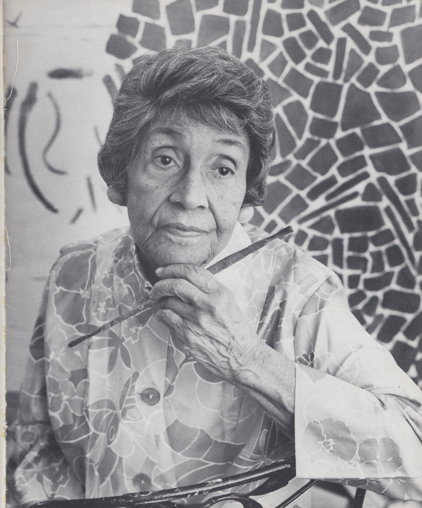

Alma Woodsey Thomas has dedicated her life to art. She pursued a degree in Fine Arts and became the first Fine Arts Graduate of Howard University of Fine Arts. Alma Woodsey Thomas was born on September 22, 1891, in Columbus Georgia. Eventually life brought her to Washington D.C. where she would remind for the rest of her life. Alma Woodsey Thomas dedicated her life to the arts and taught most of her life. She became recognized for her work in her elderly years for her abstract paintings.
© 2017 Herbert Ramirez